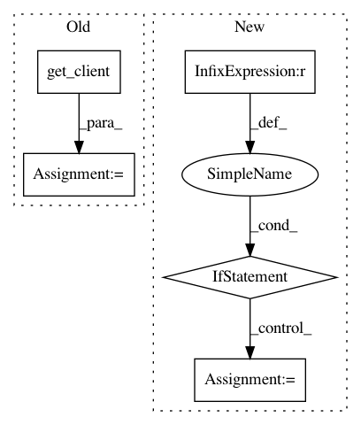

adc44ac9867933e9c237c18300fde5ed6c60a9be,elfi/client.py,BatchHandler,__init__,#BatchHandler#Any#Any#Any#,48
Before Change
def __init__(self, model, output_names=None, client=None):
self.client = client or get_client()
self.compiled_net = self.client.compile(model.source_net, output_names)
self.context = model.computation_context
self._next_batch_index = 0
self._pending_batches = OrderedDict()
After Change
@property
def pending_indices(self):
return self._pending_batches.keys()
def cancel_pending(self):
Cancels all the pending batches and sets the next batch_index to the index of
the last cancelled.
Note that we rely here on the assumption that batches are processed in order.
In pattern: SUPERPATTERN
Frequency: 3
Non-data size: 5
Instances
Project Name: elfi-dev/elfi
Commit Name: adc44ac9867933e9c237c18300fde5ed6c60a9be
Time: 2017-07-13
Author: jarno.lintusaari@aalto.fi
File Name: elfi/client.py
Class Name: BatchHandler
Method Name: __init__
Project Name: GoogleCloudPlatform/python-docs-samples
Commit Name: fcaf37ca034fecabeda10af7e5fe3c92760c2b48
Time: 2017-09-12
Author: gguuss@gmail.com
File Name: iot/api-client/manager/manager.py
Class Name:
Method Name: open_registry
Project Name: GoogleCloudPlatform/python-docs-samples
Commit Name: 1bddafd3102e4e0841d78673581c3ead8f68a7c8
Time: 2019-05-20
Author: amancuso@google.com
File Name: dataproc/list_clusters.py
Class Name:
Method Name: main